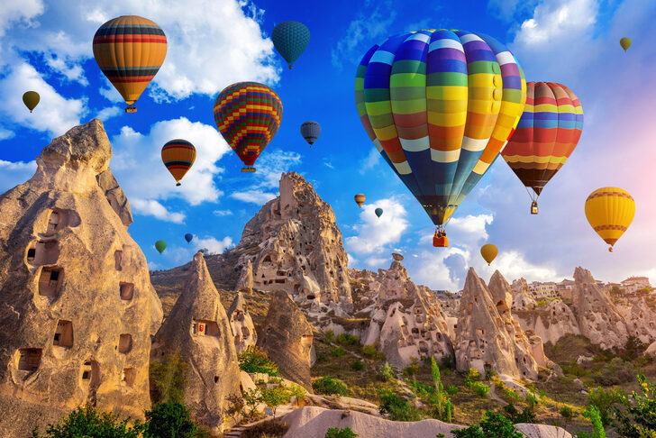

Göreme Açıkhava Müzesi, M.S. IV. yüzyıldan XIII. yüzyıla kadar yoğun bir şekilde manastır hayatına ev sahipliği eden bir kaya yerleşim yeri.
Bir vadi oluşturan alanda, kaya blokların içinde kiliseler, şapeller, yemekhaneler ve oturma mekânları oyulmuş.
Müze alanının biraz daha dışında bulunan Tokalı Kilise, Elmalı Kilise, Yılanlı Kilise, Azize Barbara Şapeli, Aziz Basil Şapeli, Çarıklı Kilise,
Kızlar Manastırı ve Karanlık Kilise gibi birçok yapıya ev sahipliği yapan Göreme Açık Hava Müzesi, doğal ve kültürel varlık olarak Dünya Miras Listesi‘nde yer alıyor. Karanlık Kilise içerisindeki duvar resimleri hala bozulmamış ve çok net olduğundan bu değerleri korumak için kiliseye ekstra ücret ödenerek giriliyor.
Göreme Açıkhava Müzesi 6 Aralık 1985 tarihinden bu yana doğal ve kültürel varlık olarak UNESCO’nun Dünya Mirası Listesi’nde yer alıyor.
Göreme Açıkhava Müzesi'ni haritada görmek için tıklayınız.
Kapadokya bölgesinin jeolojik oluşumu sayesinde inşa edilmiş sekiz katlı Derinkuyu Yeraltı Şehri, büyük bir topluluğu içinde barındıracak ve ihtiyaçlarını karşılayacak mekânlardan oluşuyor. Bölgede bulunan bir diğer örnek olan Kaymaklı Yeraltı Şehri'nden farklı olarak Derinkuyu'da bir misyonerler okulu,
günah çıkartma yeri, vaftiz havuzu ve ilgi çekici bir kuyu da bulunuyor.
Derinkuyu'nun ilk yerlileri Asur kolonilerine kadar uzanıyor. II. yüzyılda Roma İmparatorluğu'nun zulmünden kaçan ilk Hıristiyanlar Antakya ve Kayseri üzerinden Kapadokya'ya gelerek buraya yerleşmişler. Bölgedeki yeraltı şehirlerini kuran ilk Hıristiyanlar, girişleri kolayca fark edilemeyecek şekilde yapılmış
bu şehirlerde saklanarak Romalı askerlerin zulmünden kurtulabilmişler. Yeraltı şehirlerinde uzun süre dışarı çıkmadan yaşamak zorunda kalabilecekleri için erzak depoları, havalandırma bacaları, şarap imalathaneleri, kiliseler, manastırlar, su kuyuları, tuvaletler ve toplantı odaları yaparak alanlarını genişletmişler.
Birbirine bağlı odalardan oluşan bu şehirlerde bazı odalar ancak bir insanın geçebileceği kadar dar tünellerle birbirine bağlanıyor. Tünellerin giriş çıkışlarında güvenlik nedeniyle tüneli kapatmak için kullanılan büyük taş silindirler var.
Derinkuyu Yeraltı Şehri'ni haritada görmek için tıklayınız.
Nevşehir'e 20 km. mesafede bulunan Kaymaklı kasabasındadır. 8 katlı olup ilk katı erken dönem tarihlenmektedir. Roma ve Bizans dönemlerinde de diğer alanların oyularak genişletilmesi suretiyle yeraltı şehri haline dönüştürülmüştür. Bugün 4 katı ziyarete açıktır. Tüf kayalara oyulmuş bu yeraltı şehri,
bir kitlenin geçici olarak yaşayabilmesi için gerekli barınma şartlarına haizdir. Dar koridorlarla birbirlerine bağlanan oda ve salonlar, şarap depoları, su mahzenleri, mutfak ve erzak depoları, havalandırma bacaları, su kuyuları, kilise ve dışarıdan gelebilecek herhangi bir tehlikeyi önlemek için kapıyı içten kapatan büyük sürgü taşları vardır.
Kaymaklı Yeraltı Şehri'ni haritada görmek için tıklayınız.
Unesco Dünya Mirasları arasında yer alan Kapadokya’da en çok fotoğraf çekilen yerlerin ilk sırasında Üç Güzeller Peribacaları yer alıyor. Öyle ki her yıl yaklaşık 2 milyon turistin ziyaret ettiği bölgede, tüm gezginlerin, nişanlanan veya evlenen çiftlerin albümlerindeki fotoğraflarda, arka fonda Üç Güzeller var.
Gerek yurt içi, gerek yurt dışı tatil turlarının reklamlarında, broşürlerinde hatta eski 50 TL’lerin bir yüzünde yine Kapadokya Üç Güzeller var. Çünkü bu 3 peribacası Kapadokya’nın simgesi.
Üç Güzeller Peribacaları’nın şapkalı oluşumlarıyla diğerlerinden daha farklı bir yapıda olduğunu söylemeden geçmeyelim. Kapadokya’daki peribacaları tüflü volkanik arazide sel suları ve rüzgarın etkisiyle oluşmuş yapılar. Üç Güzeller’de, rüzgar ve sel suları kayaların zeminini aşındırırken üst kısımlarına dokunmamış
ve sert kayalar gövdeleri huni şeklinde, başları ise düştü düşecek şapkalı peribacalarına dönüşmüş.
Üç Güzelller'i haritada görmek için tıklayınız.
Kapadokya'daki en unutulmaz deneyiminizi yaşamak için balon turu yapılması gereken etkinliklerin en başında yer alıyor. Dünyanın birçok noktasında balon turu düzenleniyor. Bazılarında uçsuz bucaksız deniz, bazısında dümdüz ovalar görülüyor. Balon turunun amacına en güzel hizmet eden en farklı yeryüzü şeklini gözlemleyeceğiniz yer Kapadokya’dır.

Aksaray'a 40 km uzaklıkta olan Ihlara Vadisi, Hasandağı volkanından püskürtülen lavların akarsu aşındırması sonucunda oluşan bir vadidir. Melendiz çayı, milyonlarca yıllık bir sürecin sonunda, 14 kilometre uzunluğunda ve yüksekliği yer yer 110 metreye ulaşan kanyon görünümlü bu vadiyi meydana getirmiştir.
14 km uzunluğundaki vadi Ihlara'dan başlar, Selime'de son bulur. Vadinin yüksekliği yer yer 100 -150 m dir. Vadi boyunca kayalara oyulmuş sayısız barınaklar, mezarlar ve kiliseler bulunmaktadır. Ihlara vadisi'nde kiliselerdeki süslemeler 6. yüzyılda başlayarak 13. yüzyılın sonuna kadar devam etmiştir.
Bazı barınaklar ve kiliseler yeraltı şehirlerinde olduğu gibi birbirine tünellerle bağlantılıdır.Resimleri iyi korunmuş bazı kiliseler şunlardır; Ağaçaltı Kilisesi, Pürenliseki Kilisesi, Yılanlı Kilisesi, Sümbüllü Kilisesi.
Ihlara Vadisi'ni haritada görmek için tıklayınız.
Nevşehir merkeze 5 kilometre mesafedeki Uçhisar, Kapadokya’nın her yerinden görülen en büyük ve en güzel peri bacasıdır. Kalenin zirvesi Kapadokya’nın kuş bakışı görüleceği tek yerdir. Güvercinlik Vadisi’nden, Avanos’a doğru tüm vadiler, Ortahisar Kalesi, Göreme Beldesi, Göreme Açıkhava Müzesi,
Kılıçlar Vadisi, Kızılçukur, Güllüdere, Çavuşin, Boztepe, Aktepe, Avanos, yani bütün Kapadokya ayağınızın altındadır.
Uçhisar Kalesi, Erciyes ve Hasan Dağı’nın birlikte görülebileceği tek yerdir. Erciyes Dağı’nın yani Kapadokya Bölgesi’nin yaratıcısının en iyi görüldüğü yer yine Uçhisar Kalesi’dir. Roma döneminden beri oyularak içine çok sayıda oda, ev, sığınak, depo, sarnıç, mezar, mahsen, yapılmış,
Arap akınlarına karşı önemli bir savunma noktası olmuştur. Üzerinde saldırganlara karşı savunma amaçlı kullanılan büyük taş gülleler bulundurulmuştur.
Uçhisar Kalesi'ni haritada görmek için tıklayınız.
Avanos, Nevşehir İline bağlı bir ilçedir. Nevşehir'in 18 km kuzeyinde olan yerleşiminin, Antik Devirdeki adı Venessa, Zuwinasa ya da Ouenasadır. Çok sayıda çanak çömlek atölyesi bulunan ilçede seramik yapım geleneği Hititlerden beri süregelmektedir.
Avanos'un ismi Hititler döneminde Zuwinasa, Asurlular döneminde
Nenansa, Bizanslılar döneminde Venessa olarak geçmiş; Osmanlı
belgelerinde ise Avanos, Enez, Evenez olarak yazılmıştır.
İlçede Hititlerden beri seramik yapım geleneği devam etmekte olup çok
sayıda çanak-çömlek atölyeleri ve 13. yüzyıl Selçuklu Dönemi’ne tarihlenen
Sarıhan Kervansarayı ve Alaaddin Camii bulunmaktadır. Bu camii 1202
yılında dönemin sultanı Alaaddin Keykubat adına yaptırılmıştır. İlçenin
ortasından akan Kızılırmak ilçeyi doğudan batıya ikiye ayırır. Bu iki yakayı Taş
Köprü, Asma Köprü ve iki adet de çevreyolu birleştirir.
Avanos'u haritada görmek için tıklayınız.